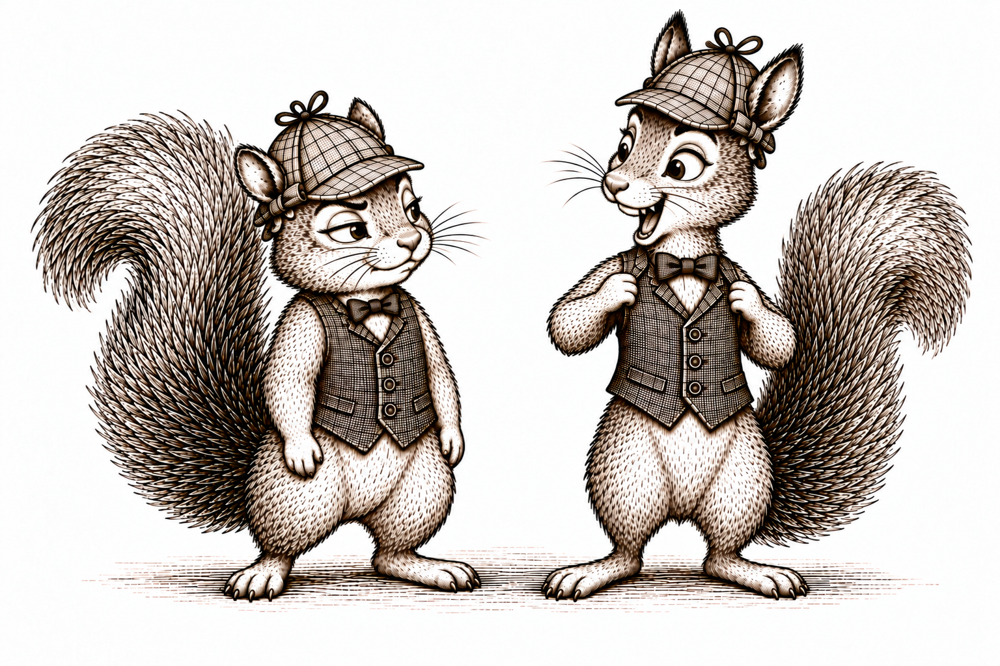
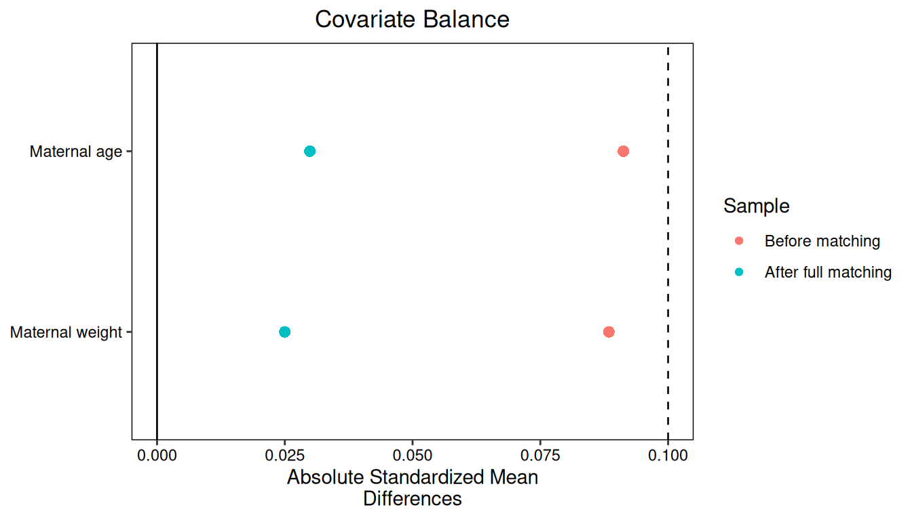
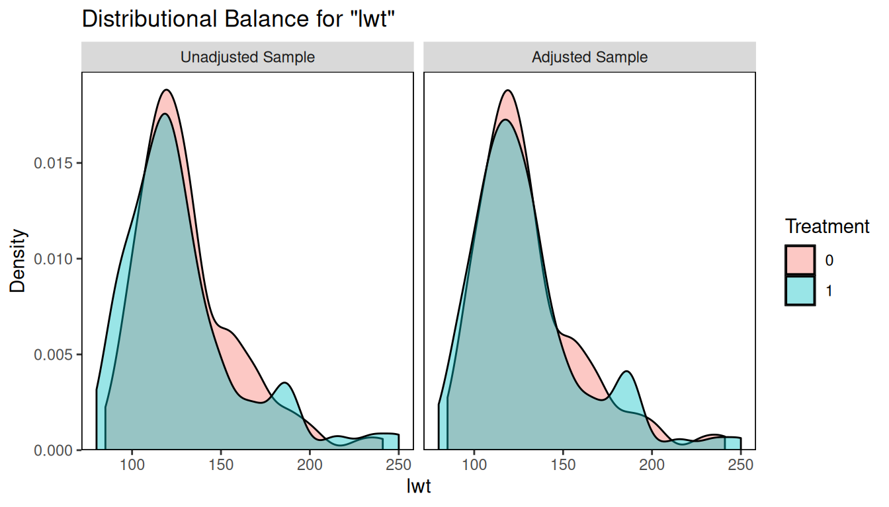
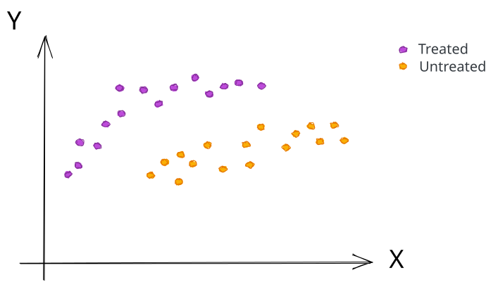

install.packages(c("MatchIt", "cobalt", "optmatch"))Matching

Introduction
In the previous section, we estimated the conditional mean
\[\mu(X,A) = E[Y|X,A]\]
using a regression model. This let us predict outcomes at different treatment values, even when few people had exactly the same covariates. But we could get that model wrong. We might miss a nonlinear relationship or an interaction, and those errors can carry through to our estimated causal effect.
We could avoid specifying a regression model by averaging outcomes separately for every combination of \(X\) and \(A\), as we did in our binary example. But with more covariates, those groups become vanishingly small. Some might contain no one at all.
Matching looks for a middle ground. Rather than specify an outcome-regression model or require a large group at every covariate combination, we compare people with similar values of \(X\). The idea is that their conditional means should be similar too. Finding such people can still be difficult, and using approximate matches requires us to consider how much the conditional mean might change between them.
Here, we focus on a binary exposure and two causal contrasts we have already defined: the average treatment effect (ATE) and the average treatment effect among the treated (ATT).
The idea
Under the measured-confounding SCM, we identified the ATE as
\[ E\left[Y(1)-Y(0)\right] =E\left[\mu(X,1)-\mu(X,0)\right]. \]
For an independent and identically distributed sample of \(n\) people, we can approximate the outer expectation by a sample mean:
\[ E\left[Y(1)-Y(0)\right] \approx \frac{1}{n}\sum_{i=1}^{n} \left\{\mu(x_i,1)-\mu(x_i,0)\right\}. \]
Outcome regression estimated both conditional means using a fitted model. Matching takes a different approach: we use a person’s observed outcome and the outcome of someone with similar covariates in the other exposure group. Let’s see how this works.
Example. Take the following data:
| Person | \(X\) | \(A\) | \(Y\) |
|---|---|---|---|
| Acorn | 4 | 1 | 3 |
| Hazel | 4 | 0 | 6 |
| Chestnut | 7 | 1 | 5 |
| Maple | 7 | 0 | 9 |
| Juniper | 7 | 1 | 9 |
For each person \(i\), write their observed covariates, exposure, and outcome as \(x_i,a_i,y_i\). We want to estimate \(\mu(x_i,1)-\mu(x_i,0)\) for each of our five people.
Start with Acorn, whose observed values are \(x_i=4\), \(a_i=1\), and \(y_i=3\). Acorn’s outcome, \(3\), estimates \(\mu(4,1)\). We need an untreated match to estimate \(\mu(4,0)\). Hazel has the same covariates and did not receive treatment, so we use Hazel’s outcome, \(6\). Acorn’s estimated difference is
\[ 3-6=-3. \]
Now consider Hazel, whose observed values are \(x_i=4\), \(a_i=0\), and \(y_i=6\). Hazel’s own outcome, \(6\), estimates \(\mu(4,0)\). This time, we need a treated match to estimate \(\mu(4,1)\). Acorn provides that match, with outcome \(3\). Hazel’s estimated difference is
\[ 3-6=-3. \]
Next is Chestnut, whose observed values are \(x_i=7\), \(a_i=1\), and \(y_i=5\). Chestnut’s outcome, \(5\), estimates \(\mu(7,1)\). Maple has the same covariates and did not receive treatment, so Maple’s outcome, \(9\), estimates \(\mu(7,0)\). Chestnut’s estimated difference is
\[ 5-9=-4. \]
Maple has observed values \(x_i=7\), \(a_i=0\), and \(y_i=9\). Maple’s own outcome, \(9\), estimates \(\mu(7,0)\). This time, two treated people have the same covariates: Chestnut and Juniper. We can average their outcomes to estimate \(\mu(7,1)\):
\[ \frac{5+9}{2}=7. \]
Maple’s estimated difference is therefore \(7-9=-2\).
Finally, Juniper has observed values \(x_i=7\), \(a_i=1\), and \(y_i=9\). Juniper’s own outcome estimates \(\mu(7,1)\), and Maple’s outcome estimates \(\mu(7,0)\). Juniper’s estimated difference is
\[ 9-9=0. \]
Here is what we constructed:
| Person | Match | Estimate of \(\mu(x_i,1)\) | Estimate of \(\mu(x_i,0)\) | Difference |
|---|---|---|---|---|
| Acorn | Hazel | 3 | 6 | \(-3\) |
| Hazel | Acorn | 3 | 6 | \(-3\) |
| Chestnut | Maple | 5 | 9 | \(-4\) |
| Maple | Chestnut, Juniper | 7 | 9 | \(-2\) |
| Juniper | Maple | 9 | 9 | \(0\) |
We always subtract the untreated outcome from the treated outcome. Averaging these differences over all five people gives our estimate of the ATE:
\[ E\left[Y(1)-Y(0)\right] \approx \frac{-3+(-3)+(-4)+(-2)+0}{5}=-2.40. \]
These matched differences estimate differences in conditional means. They are not individual treatment effects: the two outcomes in each comparison come from different people.
Matching pairs individuals in different exposure groups who have the same or similar baseline covariates. Comparisons of their outcomes are used to estimate causal contrasts.
Why matching works
Let’s spell out why these matched outcomes estimate the conditional means we need. Focus on one person with covariates \(x_i\), observed exposure \(a_i\), and observed outcome \(y_i\). We want to estimate
\[ \mu(x_i,1)-\mu(x_i,0). \]
Suppose this person received treatment, so \(a_i=1\). Their observed outcome gives us a noisy estimate of \(\mu(x_i,1)\):
\[ \mu(x_i,1)\approx y_i. \]
This estimate is unbiased because, by definition,
\[ E\left[Y-\mu(x_i,1)\mid X=x_i,A=1\right]=0. \]
Their outcome may fall above or below the conditional mean, but its expected error is zero. Our comparison therefore becomes
\[ \mu(x_i,1)-\mu(x_i,0) \approx y_i-\mu(x_i,0). \]
We still need \(\mu(x_i,0)\). Look for another person, indexed by \(j\), whose covariates \(x_j\) equal \(x_i\) and who did not receive treatment. Their observed outcome \(y_j\) is an unbiased estimate of \(\mu(x_j,0)\). Because \(x_j=x_i\), this is exactly the conditional mean we need.
If no exact match exists, we look for an untreated person with similar covariates, using a measure of distance that we will discuss shortly. We then rely on the conditional mean changing little over that distance, so that
\[ \mu(x_i,0)\approx\mu(x_j,0). \]
There are now two approximations: using the conditional mean at nearby covariates, and estimating that mean with the matched person’s outcome. Together, they give
\[ \mu(x_i,1)-\mu(x_i,0) \approx y_i-\mu(x_j,0) \approx y_i-y_j. \]
Person \(j\) is the match for person \(i\). An exact match removes the first approximation; the observed outcomes still vary around their conditional means.
If person \(i\) was untreated instead, their own outcome estimates \(\mu(x_i,0)\). We find a treated match \(j\) whose outcome estimates \(\mu(x_i,1)\), giving
\[ \mu(x_i,1)-\mu(x_i,0) \approx \mu(x_j,1)-y_i \approx y_j-y_i. \]
Either way, we subtract the untreated outcome from the treated outcome.
NoteTechnical note: outcome noise and covariate mismatch
Suppose person \(i\) received the opposite exposure from \(a\), and let \(J(i)\) contain their \(k_i\) matches, all with exposure \(a\). Their average matched outcome satisfies
\[ \begin{aligned} \frac{1}{k_i}\sum_{j\in J(i)}y_j &=\mu(x_i,a)\\ &\quad+\frac{1}{k_i}\sum_{j\in J(i)}\left[y_j-\mu(x_j,a)\right]\\ &\quad+\frac{1}{k_i}\sum_{j\in J(i)}\left[\mu(x_j,a)-\mu(x_i,a)\right]. \end{aligned} \]
The second line is outcome noise around each match’s own conditional mean. Selecting matches using covariates and exposure, without using outcomes, preserves its zero conditional mean under i.i.d. sampling. The third line is the mismatch between the conditional mean we need and those of the matches. Exact matching makes this last term zero. Approximate matching need not.
Finding matches
Our five squirrels made this easy: everyone had a match with exactly the same covariates, and Maple had two. What if there are several possible matches? What if there are none with exactly the same covariates? Before using any outcomes, we need to decide how we will find matches.
Exact matches
Acorn has observed covariates \(x_i=4\). An exact match must have covariates \(x_j=4\) and the opposite exposure value. If \(X\) contains several variables, all their values must agree. For example, if we match on age and maternal weight, a 25-year-old mother weighing 120 pounds needs a match who is also 25 years old and weighs 120 pounds.
Exact matching requires matched individuals to have identical values of every covariate used for matching.
If several people qualify, we can choose one, perhaps at random, or use several of them. We make this choice without looking at their outcomes.
Nearby matches
For Acorn, the distances to the two untreated squirrels are
\[ |4-4|=0, \qquad |4-7|=3. \]
Hazel is closer, so we choose Hazel. When no exact match exists, we can use the same idea and choose the person whose covariates are closest. This is nearest-neighbor matching.
Nearest-neighbor matching selects matches from the opposite exposure group with the smallest covariate distance among the eligible individuals.
For one numerical covariate, absolute difference is a simple distance measure:
\[ d(x_i,x_j)=|x_i-x_j|. \]
With several covariates, we need to decide how to combine the differences. Consider a mother aged 25 who weighs 120 pounds. Two possible matches are aged 27 and 35, with weights 130 and 121 pounds, respectively. Their differences from her are
| Possible match | Difference in age | Difference in weight |
|---|---|---|
| First | 2 years | 10 pounds |
| Second | 10 years | 1 pound |
If we simply square the differences, add them, and take a square root, the distances are
\[ \sqrt{2^2+10^2}\approx10.20, \qquad \sqrt{10^2+1^2}\approx10.05. \]
This Euclidean distance chooses the second match. But one year and one pound are different units. Changing pounds to kilograms could change which match wins.
One approach is to divide each difference by that covariate’s sample standard deviation before combining them. Suppose the standard deviations are 5 years and 20 pounds. The distances become
\[ \sqrt{\left(\frac{2}{5}\right)^2+\left(\frac{10}{20}\right)^2} \approx0.64, \qquad \sqrt{\left(\frac{10}{5}\right)^2+\left(\frac{1}{20}\right)^2} \approx2.00. \]
Now the first match is closer. This standardized distance compares differences relative to how much each covariate varies in our sample.
Mahalanobis distance also accounts for how the covariates vary together. If two covariates contain much of the same information, it adjusts for that overlap when measuring distance.
NoteTechnical note: distance with several covariates
Write \(x_i\) and \(x_j\) as vectors. Distances of the form
\[ d(x_i,x_j)=\sqrt{(x_i-x_j)^\mathsf{T}S^{-1}(x_i-x_j)} \]
include Euclidean distance when \(S\) is the identity matrix, standardized Euclidean distance when \(S\) is diagonal with the sample variances, and Mahalanobis distance when \(S\) is the sample covariance matrix. The inverse requires \(S\) to be nonsingular.
Calipers
The nearest person is not necessarily a good match. Even the smallest available distance could be large, and we might not want to use that person’s outcome to estimate the conditional mean we need. We can restrict how far apart matches are allowed to be.
A caliper is a maximum acceptable distance between matched individuals.
For Acorn, a caliper of \(1\) on \(X\) accepts Hazel, whose distance is \(0\), and rejects Maple, whose distance is \(3\). If no eligible person falls within the caliper, the person has no match under this rule.
One match or several?
We used one match for Acorn, Hazel, Chestnut, and Juniper, but two for Maple. When several people qualify, we can use their average outcome to estimate the conditional mean we need.
Maple has two treated matches, Chestnut and Juniper, with outcomes \(5\) and \(9\). How do these matches enter Maple’s comparison?
Average their outcomes to estimate \(\mu(7,1)\):
\[ \frac{5+9}{2}=7. \]
Maple’s own outcome estimates \(\mu(7,0)\), so the estimated difference is \(7-9=-2\).
Using several matches can reduce outcome noise. But with approximate matching, adding more people may mean accepting matches who are farther away. We have to weigh the additional outcomes against the additional covariate mismatch.
The number of matches can also vary from person to person. Consider these counts:
| \(A=0\) | \(A=1\) | |
|---|---|---|
| \(X=0\) | 10 | 20 |
| \(X=1\) | 40 | 30 |
| \(X=2\) | 80 | 10 |
There are many untreated matches available per treated person at \(X=2\), but fewer at \(X=0\).
Suppose we want matches for each treated person. How could the number of exact matches vary across these covariate values?
At \(X=0\), each of the 20 treated people could receive one untreated match, but some of the 10 untreated people would need to be used more than once.
At \(X=1\), we could give one untreated match to each of 20 treated people and two untreated matches to each of the remaining 10. This uses all \(20+2(10)=40\) untreated people without reuse.
At \(X=2\), each of the 10 treated people could receive eight untreated matches, using all 80 untreated people without reuse.
For a person with several matches, use the average of their matches’ outcomes in the comparison.
When a person can be used as a match more than once, we call this matching with replacement. Without replacement, once someone has been used as a match, they are unavailable as a match for the remaining people in the focal group. Allowing reuse can help when several people have the same best match, but it makes their estimated differences share an outcome.
Choosing matches together
Choosing the nearest available match one person at a time is a greedy procedure: it makes the best available choice for the person currently being matched. Without replacement, that choice makes the match unavailable to later people. Someone who comes later might be left with a poor match, and changing the order could change the result.
We can instead choose the matches together. Optimal pair matching chooses pairs to minimize their total distance under the matching restrictions. This considers how one person’s match affects the matches available to everyone else.
We can also choose a partition into matched sets. In full matching, every retained person belongs to exactly one set, and every set contains both exposure groups. Each set has either one treated person and one or more untreated people, or one untreated person and one or more treated people. Optimal full matching chooses these sets together, allowing their sizes to vary while seeking close matches.
Our five squirrels form two such sets:
| Matched set | Treated members | Untreated members |
|---|---|---|
| First | Acorn | Hazel |
| Second | Chestnut, Juniper | Maple |
All five squirrels belong to exactly one set. In the second set, Maple supplies the untreated comparison for Chestnut and Juniper, and their average supplies Maple’s treated comparison.
Checking the matches
Before matching, the treated and untreated groups may have different covariates. Their outcomes could therefore differ because of treatment, because of those covariates, or both. Matching tries to remove the covariate differences as a possible explanation by comparing people with the same or similar covariates.
Exact matching makes the covariates agree within every comparison. With approximate matching, some differences remain. Checking covariate balance helps us see how much remains, on average.
We do this using the same calculation we will use for outcomes. For each person, replace the outcome with the value of a covariate. Compare their value with their match’s value—or the average across their matches—always subtracting untreated from treated. Then average these differences across the people whose effects we are trying to estimate. Repeat this for each covariate.
Let’s do this for our squirrels. Before matching, the treated squirrels have covariate values \(4,7,7\), and the untreated squirrels have values \(4,7\). Their means are
\[ \begin{aligned} \text{Treated mean of }X&=\frac{4+7+7}{3}=6,\\ \text{Untreated mean of }X&=\frac{4+7}{2}=5.50. \end{aligned} \]
The treated mean is \(0.50\) higher. Now replace the outcomes in our five matched comparisons with \(X\):
| Person | Treated covariate value | Untreated covariate value | Difference |
|---|---|---|---|
| Acorn | 4 | 4 | 0 |
| Hazel | 4 | 4 | 0 |
| Chestnut | 7 | 7 | 0 |
| Maple | \((7+7)/2=7\) | 7 | 0 |
| Juniper | 7 | 7 | 0 |
Both sides contribute \(4,4,7,7,7\). Their means are
\[ \begin{aligned} \text{Treated mean of }X\text{ in the comparisons} &=\frac{4+4+7+7+7}{5}=5.80,\\ \text{Untreated mean of }X\text{ in the comparisons} &=\frac{4+4+7+7+7}{5}=5.80. \end{aligned} \]
The means agree, and the average covariate difference is zero. Here, we used exact matches. With approximate matches, the differences need not be zero.
But the size of a covariate difference depends on its units. The same difference in maternal weight looks numerically larger in pounds than in kilograms. We do not want a covariate to look more or less balanced simply because of the scale on which we recorded it.
We therefore divide the mean difference by a standard deviation. The units cancel, expressing the difference relative to how much that covariate varies. This standardized mean difference gives us a common scale for comparing balance across covariates and across studies.
Write \(s_1^2\) and \(s_0^2\) for the sample variances of \(X\) in the original treated and untreated groups. Here,
\[ \begin{aligned} s_1^2&=\frac{(4-6)^2+(7-6)^2+(7-6)^2}{3-1}=3,\\ s_0^2&=\frac{(4-5.50)^2+(7-5.50)^2}{2-1}=4.50. \end{aligned} \]
We use the square root of their average as our denominator:
\[ \sqrt{\frac{s_1^2+s_0^2}{2}} =\sqrt{\frac{3+4.50}{2}} \approx1.94. \]
This is an ordinary average of the two variances; we do not weight them by the group sizes. We use this same denominator before and after matching, so the comparison scale stays fixed. Our standardized mean differences are therefore
\[ \begin{aligned} \text{Before matching}&=\frac{6-5.50}{\sqrt{3.75}}\approx0.26,\\ \text{After matching}&=\frac{5.80-5.80}{\sqrt{3.75}}=0. \end{aligned} \]
| Treated mean of \(X\) | Untreated mean of \(X\) | Standardized mean difference | |
|---|---|---|---|
| Before matching | 6 | 5.50 | 0.26 |
| Matched comparisons for the ATE | 5.80 | 5.80 | 0 |
In this example, the covariate distributions in our comparisons agree too: two of the five comparisons have \(X=4\) on each side, and three have \(X=7\). With other data, equal means need not imply similar distributions. We also inspect their spread and whether one group contains more people at the extremes.
Combining the comparisons
The procedure is now the same for each person:
- Find one or more matches with the opposite exposure value, using the chosen rule for comparing covariates.
- Average the outcomes of those matches. With one match, this is just that person’s outcome.
- Use the person’s own outcome for their observed exposure and the average matched outcome for the other exposure. Subtract the untreated estimate from the treated estimate.
- To estimate the ATE, average these differences over everyone in the sample.
These steps require a match for every person whose difference we include. We will return to what happens when some people have no suitable match.
We can also average the estimated outcomes under each treatment value first, then subtract. Use the estimates from our squirrel table:
\[ \begin{aligned} E\left[Y(1)\right] &\approx\frac{3+3+5+7+9}{5}=5.40,\\ E\left[Y(0)\right] &\approx\frac{6+6+9+9+9}{5}=7.80. \end{aligned} \]
Their difference, \(5.40-7.80=-2.40\), is exactly the ATE estimate we obtained by averaging all five matched differences.
It might feel like double-dipping to match Acorn to Hazel and then Hazel to Acorn. These comparisons share outcomes, so they are not independent.
We can instead focus on finding matches for one exposure group. If we match each treated person and average their differences, we estimate the ATT. The treated squirrels are Acorn, Chestnut, and Juniper, whose estimated differences are \(-3,-4,0\):
\[ E\left[Y(1)-Y(0)\mid A=1\right] \approx \frac{-3+(-4)+0}{3}\approx-2.33. \]
If we match each untreated person to treated people and average their differences, we estimate the average treatment effect among the untreated (ATC). Hazel and Maple have estimated differences \(-3\) and \(-2\):
\[ E\left[Y(1)-Y(0)\mid A=0\right] \approx \frac{-3+(-2)}{2}=-2.50. \]
The ATE, ATT, and ATC estimates differ because they average over different groups. Focusing on one exposure group simplifies the matching procedure, but it changes the causal question. It also does not eliminate shared outcomes or the need for care with standard errors.
We choose the target before selecting matches. For the ATT, each treated person needs an untreated match. For the ATC, each untreated person needs a treated match. For the ATE procedure above, everyone needs a match from the other group.
NoteTechnical note: matching weights and uncertainty
Our matching estimates of \(E\left[Y(a)\right]\) can also be written as weighted means of the observed outcomes. The weights collect each outcome’s contributions to the comparisons we already constructed.
For the treated estimate, Acorn contributes twice: once for Acorn and once for Hazel. Chestnut and Juniper each contribute their own outcome and half of Maple’s treated estimate, giving weights of \(1.50\) each. For the untreated estimate, Hazel contributes twice and Maple contributes three times.
| Person | \(A\) | ATE weight |
|---|---|---|
| Acorn | 1 | 2 |
| Hazel | 0 | 2 |
| Chestnut | 1 | 1.50 |
| Maple | 0 | 3 |
| Juniper | 1 | 1.50 |
Using these weights gives the same estimates:
\[ \begin{aligned} E\left[Y(1)\right] &\approx\frac{2(3)+1.50(5)+1.50(9)}{5}=5.40,\\ E\left[Y(0)\right] &\approx\frac{2(6)+3(9)}{5}=7.80. \end{aligned} \]
In general, the weighted mean for exposure value \(a\) is
\[ \frac{\sum_{i:a_i=a}w_i y_i}{\sum_{i:a_i=a}w_i}. \]
For full matching with an ATE target, each person’s weight is proportional to the size of their matched set divided by the number with their exposure value in that set. The weights depend on the target. For our ATT calculation, each treated squirrel contributes once, Hazel contributes once, and Maple contributes twice. Multiplying all weights in an exposure group by the same constant does not change its weighted mean.
The same weights reproduce our covariate-balance calculation when we replace \(Y\) with \(X\).
Unequal weights can make a mean rely heavily on a few outcomes. The effective sample size summarizes this concentration within an exposure group:
\[ \frac{\left(\sum_i w_i\right)^2}{\sum_i w_i^2}. \]
With equal weights, this equals the number of people in that group. Our treated ATE weights give \(25/(4+2.25+2.25)\approx2.94\), compared with three distinct treated squirrels. The untreated weights give \(25/(4+9)\approx1.92\), compared with two distinct untreated squirrels.
These numbers summarize the unequal contributions. They do not provide a standard error. Our five comparisons still use only five people’s outcomes, and several comparisons share the same outcome. Standard errors must account for the matching procedure and this reuse; treating the comparisons as independent would give misleading uncertainty estimates.
A worked analysis with MatchIt
Let’s use MatchIt to find matches and cobalt to check balance in the birth-weight data. We will estimate the ATT with nearest-neighbor matching and the ATE with full matching.
Install the packages once, if needed:
Example: Smoking and birth weight
Let \(A\) indicate smoking during pregnancy and \(Y\) be infant birth weight in grams. This time, collect maternal age and maternal weight at the last menstrual period into the baseline vector \(X\). As before, \(A=1\) means smoking and \(A=0\) means not smoking.
Assume the births are i.i.d. and use the measured-confounding SCM with these two baseline covariates.
birthwt_matching <- if (file.exists("data/birthwt.csv")) {
read.csv("data/birthwt.csv")
} else {
MASS::birthwt
}
rownames(birthwt_matching) <- NULLThere are 74 mothers who smoked and 115 who did not.
Finding matches
Find one nonsmoking match for each mother who smoked, using Mahalanobis distance on maternal age and weight:
birthwt_nearest <- MatchIt::matchit(
smoke ~ age + lwt,
data = birthwt_matching,
method = "nearest",
distance = "mahalanobis",
estimand = "ATT",
ratio = 1,
replace = TRUE,
m.order = "data"
)The formula lists the exposure and matching covariates; infant birth weight does not appear. ratio = 1 requests one match per smoker, and replace = TRUE allows a nonsmoker to be reused. m.order = "data" visits smokers in their row order.
Inspect the first four pairs without looking at birth weight. The row numbers identify the mothers:
smoker_rows <- as.integer(rownames(birthwt_nearest$match.matrix))[1:4]
nonsmoker_rows <- as.integer(birthwt_nearest$match.matrix[1:4, 1])
birthwt_pairs <- data.frame(
Smoker = smoker_rows,
Matched_nonsmoker = nonsmoker_rows,
Smoker_age = birthwt_matching$age[smoker_rows],
Match_age = birthwt_matching$age[nonsmoker_rows],
Smoker_weight = birthwt_matching$lwt[smoker_rows],
Match_weight = birthwt_matching$lwt[nonsmoker_rows]
)
knitr::kable(birthwt_pairs)| Smoker | Matched_nonsmoker | Smoker_age | Match_age | Smoker_weight | Match_weight |
|---|---|---|---|---|---|
| 3 | 182 | 20 | 20 | 105 | 105 |
| 4 | 149 | 21 | 21 | 108 | 103 |
| 5 | 8 | 18 | 17 | 107 | 103 |
| 9 | 24 | 29 | 28 | 123 | 120 |
MatchIt’s nearest-neighbor method targets the ATT or ATC. For the ATE, use full matching with the same covariate distance:
birthwt_full <- MatchIt::matchit(
smoke ~ age + lwt,
data = birthwt_matching,
method = "full",
distance = "mahalanobis",
estimand = "ATE"
)Checking the matches
Use cobalt to calculate standardized mean differences before and after matching, with the pooled standard deviation as the denominator:
birthwt_nearest_balance <- cobalt::bal.tab(
birthwt_nearest, un = TRUE, s.d.denom = "pooled"
)
birthwt_full_balance <- cobalt::bal.tab(
birthwt_full, un = TRUE, s.d.denom = "pooled"
)
birthwt_balance_table <- data.frame(
Covariate = c("Maternal age", "Maternal weight"),
Before = birthwt_nearest_balance$Balance$Diff.Un,
After_nearest = birthwt_nearest_balance$Balance$Diff.Adj,
After_full = birthwt_full_balance$Balance$Diff.Adj
)
knitr::kable(birthwt_balance_table, digits = 2)| Covariate | Before | After_nearest | After_full |
|---|---|---|---|
| Maternal age | -0.09 | 0.04 | -0.03 |
| Maternal weight | -0.09 | 0.01 | -0.02 |
un = TRUE includes the original comparison. Both procedures bring the mean differences closer to zero. The signs indicate which group has the larger mean; the absolute values indicate how far apart the means are.
NoteMore ways to inspect balance
A balance plot displays the absolute standardized mean differences:
cobalt::love.plot(
birthwt_full_balance,
abs = TRUE,
thresholds = c(m = 0.10),
var.names = c(age = "Maternal age", lwt = "Maternal weight"),
sample.names = c("Before matching", "After full matching")
)
The line at \(0.10\) is a common guide for inspecting balance. We can also compare covariate distributions, since similar means can hide other differences:
cobalt::bal.plot(birthwt_full, var.name = "lwt", which = "both")
Comparing outcomes
MatchIt supplies weights that combine our matched comparisons into group means, as explained in the optional technical note above. Obtain the matched data and their weights:
birthwt_nearest_data <- MatchIt::match_data(birthwt_nearest)
birthwt_full_data <- MatchIt::match_data(birthwt_full)For the first pair, both mothers are aged 20 and weigh 105 pounds. Their infant birth-weight difference is
\[ 2557 -2450 =107\text{ grams}. \]
This is one noisy estimate of the difference in conditional means at those covariates. To combine all 74 comparisons, calculate the weighted outcome mean in each group and subtract:
birthwt_nearest_mean_1 <- with(
birthwt_nearest_data,
weighted.mean(bwt[smoke == 1], weights[smoke == 1])
)
birthwt_nearest_mean_0 <- with(
birthwt_nearest_data,
weighted.mean(bwt[smoke == 0], weights[smoke == 0])
)
birthwt_nearest_mean_1 - birthwt_nearest_mean_0[1] -176.1081The weighted means are approximately 2771.92 grams for smoking and 2948.03 grams for not smoking. Their difference is
\[ E\left[Y(1)-Y(0)\mid A=1\right] \approx -176.11\text{ grams}. \]
Under our working SCM, this estimates birth weight under smoking minus birth weight under not smoking, on average, among the mothers who originally smoked. The negative estimate indicates lower birth weight under smoking.
For the full-matching ATE analysis, the calculation is the same but uses the full-matching weights:
birthwt_full_mean_1 <- with(
birthwt_full_data,
weighted.mean(bwt[smoke == 1], weights[smoke == 1])
)
birthwt_full_mean_0 <- with(
birthwt_full_data,
weighted.mean(bwt[smoke == 0], weights[smoke == 0])
)
birthwt_full_mean_1 - birthwt_full_mean_0[1] -254.2668This gives
\[ E\left[Y(1)-Y(0)\right] \approx -254.27\text{ grams}. \]
This estimates the average change under smoking versus not smoking for the group represented by our sample.
Overlap and the causal target
What if people in one exposure group have covariate values we rarely see in the other group?

Where the groups overlap, we can find people with similar covariates. Outside that region, even the nearest match may be far away. A caliper can rule out these distant matches, but then some people have no comparison. If we leave them out, we may change whose causal effect we estimate.
Example. Consider these counts:
| \(A=0\) | \(A=1\) | |
|---|---|---|
| \(X=1\) | 0 | 20 |
| \(X=2\) | 20 | 30 |
| \(X=3\) | 40 | 10 |
The 20 treated people with \(x_i=1\) have no exact untreated match. The other 40 treated people do.
If we drop the treated people with \(x_i=1\) and average matched differences over the remaining treated people, what causal effect are we trying to estimate?
We are targeting the treatment effect among treated people whose covariates are not \(1\):
\[ E\left[Y(1)-Y(0)\mid A=1,X\neq1\right]. \]
This is different from the ATT for all treated people. Dropping the unmatched group changes whom we average over.
The same issue arises when we drop untreated people while targeting the ATC, or average over a smaller retained group while targeting the ATE.
Return to the birth-weight data. Require identical ages and maternal weights for exact matching:
birthwt_exact <- MatchIt::matchit(
smoke ~ age + lwt,
data = birthwt_matching,
method = "exact",
estimand = "ATT"
)Compare who remains under the three matching procedures:
birthwt_exact_data <- MatchIt::match_data(birthwt_exact)
birthwt_retained <- data.frame(
Method = c("Exact", "Nearest neighbor", "Full"),
Smokers = c(sum(birthwt_exact_data$smoke == 1),
sum(birthwt_nearest_data$smoke == 1),
sum(birthwt_full_data$smoke == 1)),
Nonsmokers = c(sum(birthwt_exact_data$smoke == 0),
sum(birthwt_nearest_data$smoke == 0),
sum(birthwt_full_data$smoke == 0))
)
knitr::kable(birthwt_retained)| Method | Smokers | Nonsmokers |
|---|---|---|
| Exact | 9 | 8 |
| Nearest neighbor | 74 | 47 |
| Full | 74 | 115 |
Exact matching retains only 9 of the 74 smokers. Although we requested estimand = "ATT", the comparison concerns those 9 smokers, not all 74. Perfect covariate agreement in this smaller group does not tell us the effects for the mothers left out.
Nearest-neighbor matching retains all 74 smokers and uses 47 nonsmokers as matches. The other 68 nonsmokers are unused, but every smoker has a comparison, so this does not by itself change the ATT target. Full matching retains all 189 mothers and uses ATE weights to represent the original group.
Check who would be left out before comparing outcomes. Better balance among the retained people can come at the cost of changing the causal question.
NoteThe overall idea
Matching estimates the conditional means we need using outcomes from people with the same or similar baseline covariates. Find matches, check their covariates, and average their outcome comparisons over the people relevant to the causal question. Keep track of anyone left out, because excluding them can change that question.